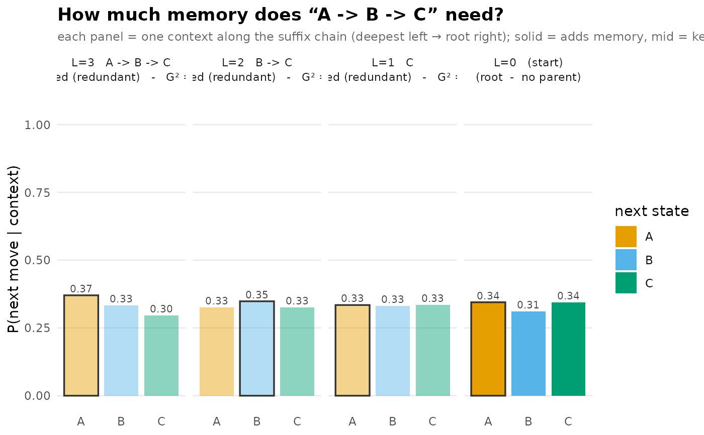

A suffix-chain pruning view: take one pathway and show, side by
side, the next-state distribution at every context along its suffix
chain — the full context, then the context with its oldest move
dropped, and so on down to the root — marking which contexts
prune_tree (criterion "G2") keeps versus prunes.
It answers "how much memory does this pathway actually need?": each
context is drawn as its own panel (deepest memory on the left, root on
the right) and classified into three states by opacity. Solid
contexts are informative — their own \(G^2\) clears the cutoff,
so they add predictive information over their one-shorter parent.
Mid-opacity contexts are retained: their own \(G^2\) is
below the cutoff, but a deeper context diverges, so prune_tree()
keeps them only as a structural bridge — they do not themselves add
memory. Faded contexts are pruned (the redundant tail).
The panel title carries the full context, the decision, and the
\(G^2\). The requested pathway must be a fitted context; the function
errors rather than silently plotting a shorter suffix.
Details
The keep/prune decision is exactly prune_tree's G2 rule
(\(2N \cdot \mathrm{KL} > \chi^2_{1-\alpha, k-1}\)); the cumulative
pruned flag follows the leaf-up amnesia rule. The distributions
and counts shown are the same node values reported throughout the
pathway API (see PARITY.md).
Examples
# \donttest{
seqs <- replicate(80, sample(c("A","B","C"), 12, replace = TRUE),
simplify = FALSE)
tree <- context_tree(seqs, max_depth = 3L, min_count = 3L)
plot_pruning(tree, "A -> B -> C")

# }